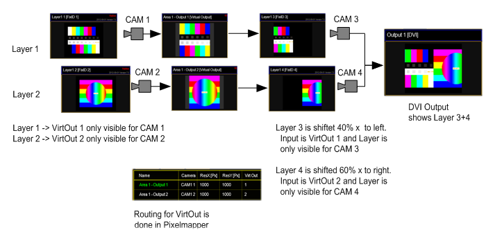

The Pixel Mapper Output can be configured with a "Virtual Output ID". You should not place any Pixel Mapper Fixtures onto that Pixel Mapper Output. If a Virtual Output ID is set, then any "Render IP" settings are ignored, the field is greyed out. The idea behind that: since a Virtual Output can be assigned with a dedicated, single Camera, you can route certain Layers to this dedicated Camera. So these Layers are only displayed on that Camera and thus only rendered on the Pixel Mapper Output. You can route as many Layers to that Virtual Output as you like. The next step is to route this Virtual Output as Virtual Input onto another Layer. This Layer is only displayed on a Camera that is only visible on a DVI Ouput.
Example for 2 Virtual Outputs:

What is it good for?
The user can create output display arrangements where each single arrangement is controlled by a Camera. So each single arrangement layer can be modified via the softedge, keystone and splitscreen parameters of each Camera. This comes in handy if an LED controller grabs certain areas out of the displayed picture and the VPU user wants to control these areas with a dedicated VPU Camera Fixture. This can be used to drive a “Matrox Triple Head to Go” setup and control each DVI Output with a dedicated VPU Camera Fixture. The “Triple Head to Go Device” is recognized by the VPU Software as one big output. What you basically do is to assign 3 Layers that display Virtual Output 1; 2 and 3 next to each other.